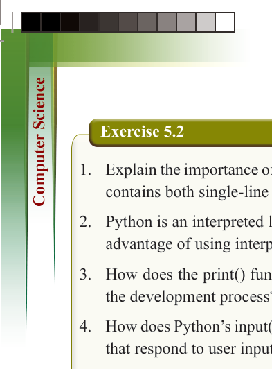
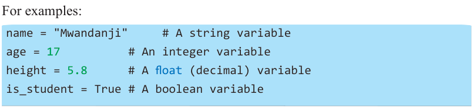

228
for Secondary Schools

Exercise 5.2
1. Explain the importance of using comments in Python and write a program that contains both single-line and multi-line comments.
2. Python is an interpreted language. Explain what this means and describe one advantage of using interpreted languages over compiled languages.
3. How does the print() function help programmers visualise the output during


the development process?

4. How does Python’s input() function make it easy to create interactive programs


that respond to user inputs?

5. How do you handle different data types when using Python’s input() function,


and why is this important?


Variables, data types, and operators


In Python programming, understanding variables, data types, and operators is

fundamental to writing effective and efficient code.
Declaring and assigning variables
A “variable” is a name that stores data. In Python, we create a variable by “assigning a value” using the “=” sign.
For examples:

name = "Mwandanji" # A string variable age = 17 # An integer variable height = 5.8 # A float (decimal) variable
is_student = True # A boolean variable
Referring to this code, name stores a text (string), age stores a whole number (integer),
height stores a decimal number (float), and is_student stores True/False (Boolean).
Basic data types in Python
Python supports various data types. Table 5.1 shows some common data types used in Python.

ComputerScin